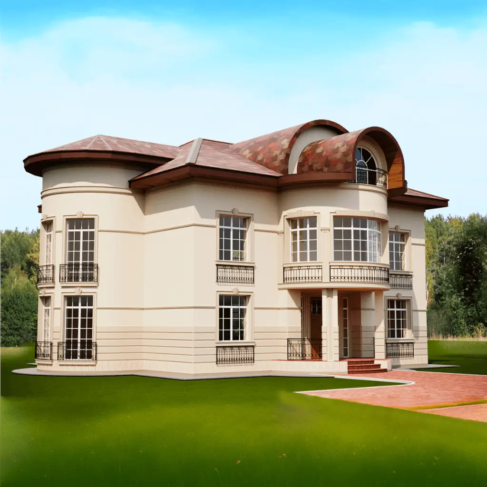
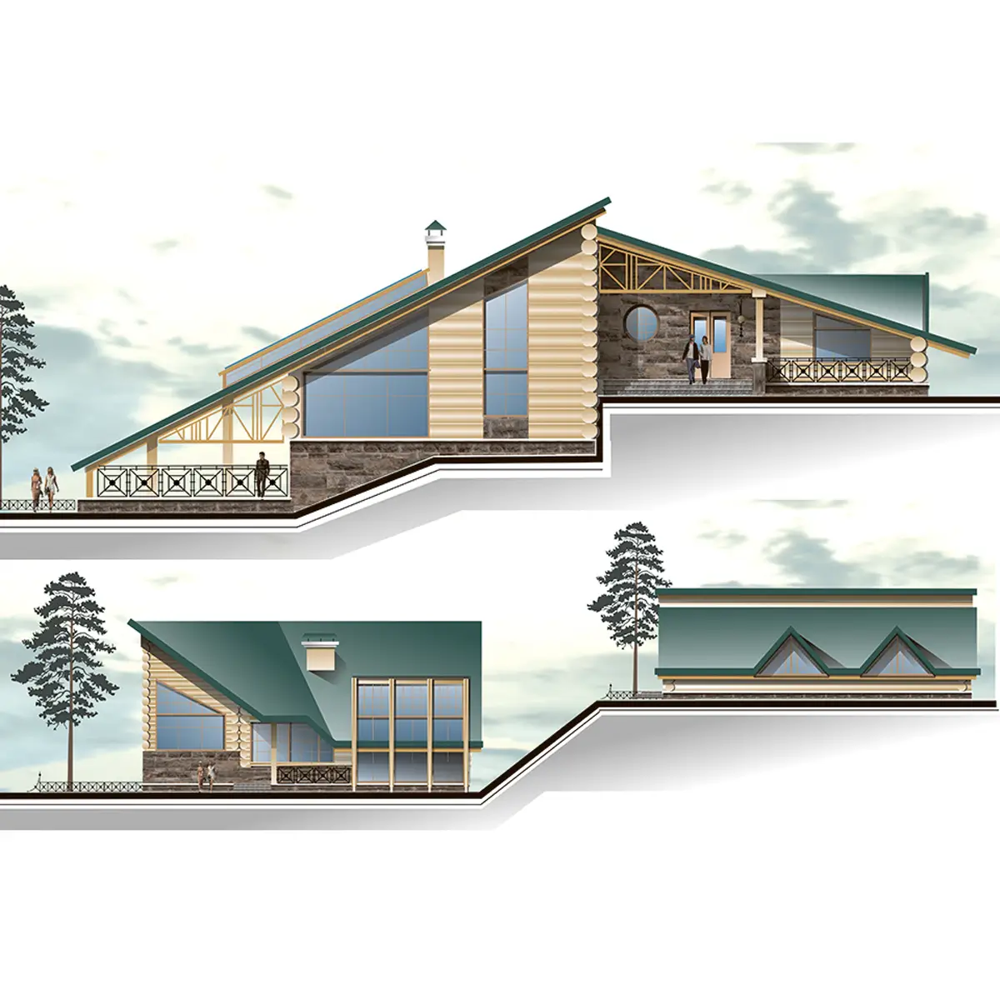
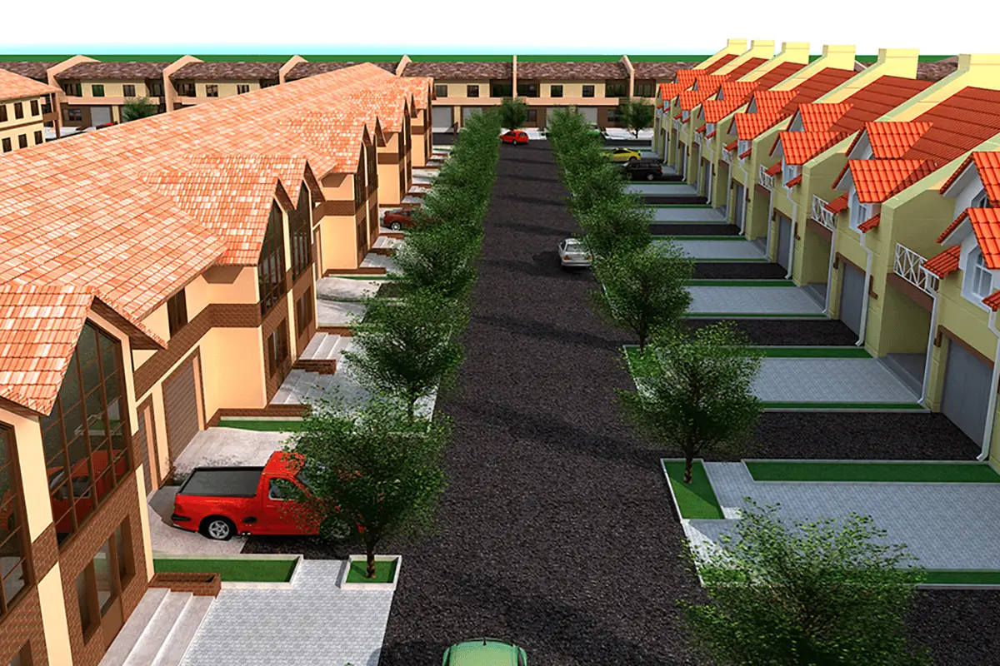
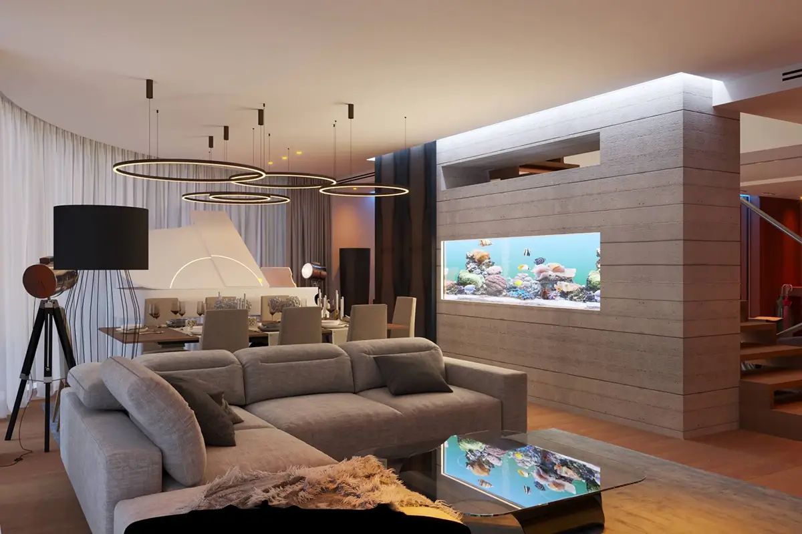

Студия архитектуры и дизайна Элис Фемины
- Разработка архитектурных проектов жилых и общественных зданий
- Дизайн-интерьера жилых и общественных помещений
- Ландшафтный дизайн
- Разработка малых архитектурных форм
- Предметный дизайн
- Веб-дизайн
Галерея проектов
Архитектура






Дизайн интерьера

